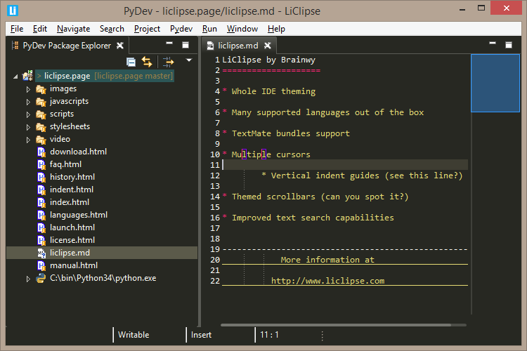

LiClipse provides a new experience for Eclipse users
With it, users get out of the box:
- A fast editor supporting many languages out of the box. View supported languages
- Support for TextMate Bundles. View TextMate Bundles Integration
- A simple way to add support for a new language
- Usability improvements for all Eclipse editors featuring:
- Multiple cursors
- Vertical indent guides
- Themed scrollbars
- Improved text search capabilities (with Lucene index-based searching, support for external folders, open editors and additional filtering on results page)
- HTML preview for the RST, Markdown and HTML editors
- Native installers
-
Improved theming support based on Eclipse 4 improvements

Release Highlights for LiClipse 11.0.0
- Updated to Eclipse 2023-12 (4.30).
- Updated PyDev to 12.0.0.
- Only Python 3.8 onwards is now supported
- Python 3.6 and 3.7 support is now dropped (please use LiClipse 10.2.0 if you still use it).
- Debugger
- sys.monitoring is now used in Python 3.12 (and it's much faster than any previous version).
- A new setting was added in the Preferences > PyDev > Debug to debug just my code (meaning that when stepping it will just step into files under PyDev source folders).
- Improved the step into function (activated with Ctrl+Alt then Click function to step into).
- Support for Python 3.6 and 3.7 was dropped (only Python 3.8 onwards is now supported).
- Ruff
- Ruff can now be used as a code formatter.
- The latest ruff (0.1.x) is now supported (as it broke backward compatibility in its 0.1.0 version).
Release Highlights for LiClipse 10.2.0
- Updated to Eclipse 2023-09 (4.29).
- Java 17 is now required.
- Updated LiClipseText to 2.5.0.
- Updated PyDev to 11.0.1.
- Support for Python 3.12
- Improvements in:
- Code Analysis
- Docstring generation
- Type inference
- ruff integration
- isort integration
View highlights for previous releases
Supported languages feature syntax highlighting, template completion,
outline, select/deselect scope, comment/uncomment, auto-indent, linked edition,
multi-edition, mark occurrences, among others.
As a note, some editors have improved support:
The HTML editor has advanced context-based code-completion
The HTML, XML and JavaScript editors have code-analysis and code-formatting features
Usability improvements for all Eclipse editors
At this point, the major improvements are multi-edition and vertical indent guides, supporting all editors
(such as PyDev, JDT, etc).
See: Multi-Edition Video for details
Besides the multi-edition (which can be triggered in a Ctrl+K search or with the mouse with
Ctrl+Alt+Mouse Click), the rectangular edit is also improved to be triggered with
Alt+Click (and stopped with escape).
Bundling of other useful plugins
Eclipse has a myriad of useful plugins, and LiClipse bundles some which are considered to be useful
regardless of which language you're dealing with: Eclipse Color Theme, StartExplorer, AnyEdit and PyDev
(note that PyDev does not follow the rule of being useful for everyone as the other plugins,
but LiClipse itself reuses parts of the PyDev codebase).